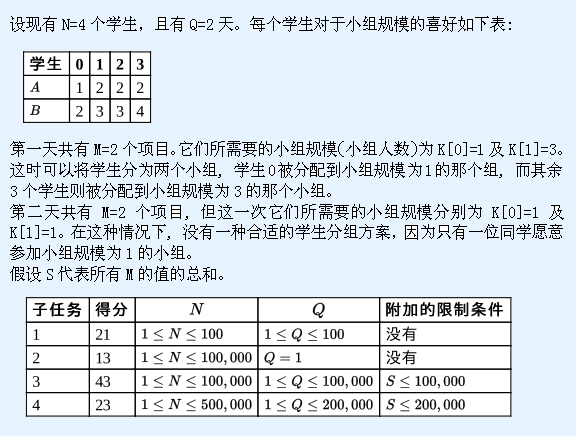

第1行: N
第2,…,N+1行: A[i] B[i]
第N+2行: Q
第N+3,…,N+Q+2行: M K[0] K[1] … K[M-1]
给定对所有学生的描述:N,A及B,同时也给定了Q个问题的序列 — 每天一个问题。每个问题包含当天要完成的M个项目, 同时含有一个长度为M的序列K, K[i]表示项目i所需的小组规模。
班里有N个学生,他们的编号为从0到N-1。每天，老师都有一些项目需要学生去完成。每个项目都需要由一组学生在一天内完成。项目的难度可能不同。对于每个项目，老师知道应该选择由多少学生组成的小组去完成。
不同的学生对小组的规模有不同的喜好。更准确地说, 对学生i而言, 他只愿意在小组规模介于A[i]和B[i]之间（含A[i]和B[i]）的小组工作。每一天，一个学生最多只能被分配到一个小组工作。有些学生可能未被分配到任何小组中。每个小组只负责一个项目。
老师已选择好接下来Q天中每一天的项目。对于每一天, 现需要判断是否有一种分配学生的方案，使得每个项目都有一个小组负责。
第1行: N
第2,…,N+1行: A[i] B[i]
第N+2行: Q
第N+3,…,N+Q+2行: M K[0] K[1] … K[M-1]
给定对所有学生的描述:N,A及B,同时也给定了Q个问题的序列 — 每天一个问题。每个问题包含当天要完成的M个项目, 同时含有一个长度为M的序列K, K[i]表示项目i所需的小组规模。
共Q行，对于每一个问题, 你的程序必须输出是否存在一种小组分配的方案，可以完成当天的所有项目。若可以完成分组去完成当天所有的项目，输出1, 否则，应输出0。
4
2 4
1 2
2 3
2 3
2
2 1 3
2 1 1
1
0
